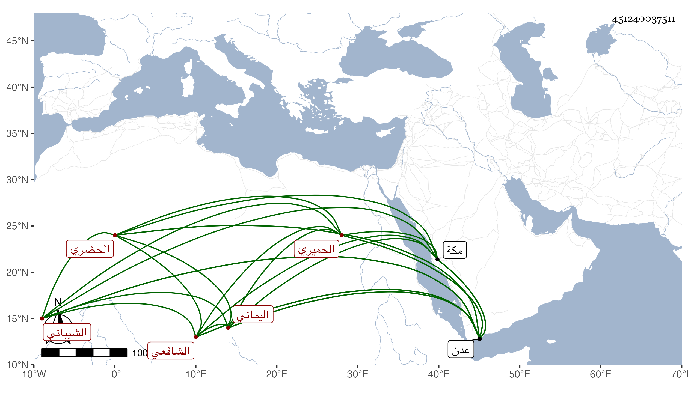

0902Sakhawi.DawLamic.ITO20230111-ara1.EIS1600.451240037511
Biography ID: 451240037511
26
عبد الله بن أحمد بن علي عفيف الدين أبو محمد وأبو مخرمة الحميري الشيباني الحضري الهجراني المدني الدار اليماني الشافعي ويعرف بأبي مخرمة . ممن تقدم في الفقه وأصوله والعربية والحديث والتفسير وكان من شيوخه في الفقه أبو حشيش وفي غيره أبو شكيل محمد بن مسعود قاضي عدن وغيرهما ، ودرس وأفتى وكلفه على بن طاهر قضاء عدن فدام قريب أربعة أشهر ثم فر وهو الآن متوجه لنفع الطلبة خاصة مع علو همة وشرف نفس ، وعمل على جامع المختصرات نكتا في مجلدة وكذا على ألفية النحو في كراريس مفيدة ولخص شرح ابن الهائم على الياسمينية إلى غير ذلك من رسائل في علم الهيئة وغيرها وفتاويه جيدة وعبارته محكمة وهو الآن في سنة سبع وتسعين جاز الستين وقد أرسل لي وأنا بمكة يستدعي الإجازة مني فأجبته .
